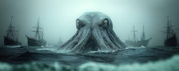

El Kraken
Una criatura gigantesca de los mitos nórdicos. Arrastra barcos enteros hacia el abismo con sus tentáculos.
Leer leyenda completa...
Los antiguos marineros escandinavos temían adentrarse en las aguas profundas del océano por miedo a despertar a esta bestia colosal. Descrito como una mezcla entre calamar gigante y pulpo de proporciones descomunales, se decía que el verdadero peligro no eran solo sus colosales tentáculos capaces de partir un navío de guerra a la mitad, sino el gigantesco remolino que generaba al sumergirse de golpe, arrastrando todo a su paso hacia el fondo del mar.

El Caleuche
Un barco fantasma que navega los mares de Chiloé. Está tripulado por aquellos que murieron ahogados.
Leer leyenda completa...
En el archipiélago de Chiloé, al sur de Chile, se habla de un navío iluminado que navega velozmente tanto sobre la superficie como bajo las profundidades marinas. El Caleuche es un barco consciente y maldito; sus tripulantes son esclavos eternos o brujos poderosos. Se dice que a bordo se escuchan músicas festivas y risas continuas para atraer a los navegantes náufragos o perdidos en la noche. Quien lo mira fijamente corre el riesgo de quedar con la boca torcida o sufrir una muerte repentina por el impacto de su magia.